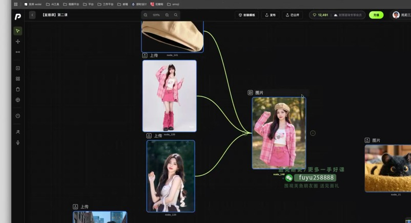
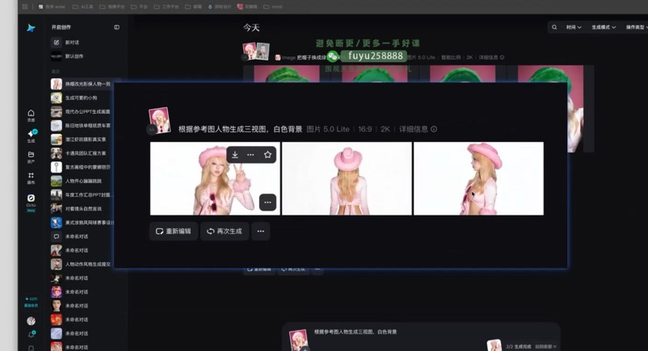
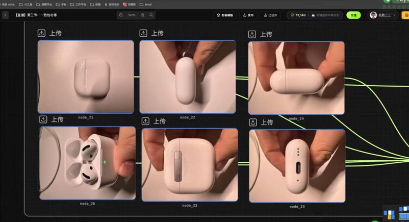

01 / 生图起步把需求写成可修改的提示词
先说清楚要交付什么，再描述画面。生成结果大体正确时，转入局部修改。
完成标准
景别对不对？主体是否清楚？必须出现的文字和产品结构是否准确？不要只凭“好看”验收。
操作步骤
- 先确定用途、画幅、主体和必须准确的信息，例如产品形状、海报文字或人物身份。
- 依次描述主体、景别、动作、环境、光线、风格。明确主体与背景的关系，避免只堆形容词。
- 一次先生成少量候选，判断是构图错、身份错，还是只有一个细节需要改。
- 要面部特写时，删除鞋子、裤子等画框外的细节，减少相互竞争的构图要求。
- 保留满意底图与参数；每次修改只处理一个主要问题，方便比较和回退。
可复制模板
【整理模板，非课堂逐字原文】
用途：[用途]；画幅：[比例]。主体：[人物或产品]，景别：[景别]，动作：[动作]。环境：[场景]，光线：[方向与质感]，风格：[目标风格]。必须保留：[关键特征]。
容易踩的坑与课程出处
逗号、自然语言或JSON都只是表达形式。结构化描述不能保证复刻参考图；不要把课堂模型偏好和榜单固化为长期规则。
课程来源：第一课中 10:02—23:49；第一课后 18:31—26:43
局部改图与多参考换装
满意的底图留住，只改明确指定的部分。多参考图先编号，再说明每张图负责什么。
完成标准
改的是目标图吗？有没有误换脸、漏配饰、改坏商品纹样？“基本一致”不等于像素完全一致。
操作步骤
- 准备清晰人物图、服装图和配饰图；说明哪些保留、哪些替换。
- 核对实际输入顺序。画布上下位置不一定等于节点内的图号；即梦引用应从实际素材列表选择。
- 先做单项修改。成功后再加入配饰或场景，不要一开始同时改变身份、服装、姿态和背景。
- 将原图与结果并排看，重点检查脸、发型、衣领、手部、花纹、遮挡和受光。
- 连续改稿变糊或过锐时，回到清晰原图或满意分支重新生成。

三种参考分工：人物、粉色穿搭、米色帽子。来源：第二课中 27:18。可复制模板
【整理模板】
图1保留人物身份，图2只提供穿搭，图3只提供帽子。让图1人物换上图2的服装并戴上图3的帽子；保留脸部、发型和非目标区域。检查服装贴合与遮挡，需要时重新协调光影。
容易踩的坑与课程出处
先区分内容错误与请求中断。引用顺序错误靠改素材连接处理，不能靠不断追加“保持一致”补救。
课程来源：第二课中 03:36—14:16、22:18—29:19；第二课后 31:07—45:43
建立能跨镜头复用的人物资产
把身份、服装和缺失视角整理清楚，再进入视频制作，减少模型反复猜测。
完成标准
是同图三视角，还是三张独立图片？三个角度的身体覆盖与服装是否对应？
操作步骤
- 选定一张清楚的角色基准图，记录发型、服装、配饰和关键外观特征。
- 生成正、侧、背视角时，明确要求放在同一张图上，并写清需要全身还是半身。
- 逐项检查三个视角的脸、发色、帽子、衣服与身体覆盖范围；不合格先修资产。
- 将角色图、需要的表情或局部特写、场景图分别保存和命名。
- 多镜头制作继续使用同一组已验收资产，变更服装时记录新版本。

失败示例：独立三张半身视角，不能当作已完成的同图全身资产。来源：第二课中 19:12。可复制模板
【整理模板】
根据参考角色，在一张图上横向排列正视图、侧视图、背视图，白色背景，[全身/半身]。保持发型、服装、帽子和关键外观特征一致。
容易踩的坑与课程出处
16:9只规定画幅，不会自动保证三视图排版。课堂粉帽示例首次得到三张独立半身图，修正提交不等于最终成功验收。
课程来源：第二课中 15:08—19:58；加餐后；第六课前后
产品精修与电商海报
产品真实信息先可靠，主视觉与文字难以同时控制时，拆开制作再合成。
完成标准
文字有错字吗？产品背面是否凭空补造？Logo有占位符吗？示意图是否被误当作可生产的矢量或印刷文件？
操作步骤
- 收集产品实拍、准确文案、Logo和设计参考。产品背面、接口等未知信息优先补拍。
- 先诊断产品图的问题：曝光、材质、污点、透视或背景。明确修什么、保留什么。
- 为海报分配主标题、副标题、说明信息与行动信息，先确认文案再生图。
- 排版复杂时先做无字主视觉，单独生成或排版标题，再合成；简单版可尝试整体生成。
- 逐字校对文案，核对产品外形、Logo、日期、位置与画幅；展示图通过后再处理正式交付文件。

用真实多角度照片补足结构信息。来源：第三课后 31:00。可复制模板
【整理模板】
基于产品实拍生成[用途]主视觉。保留真实结构、标签和材质；只调整[修改项]。为[标题区域]预留空间，背景和配色参考[参考图]，不要新增未证实的产品功效。
容易踩的坑与课程出处
单张正面图生成的多视图不等于真实六面信息；放大图像不等于恢复了真实细节。
课程来源：第一课后 43:19—52:42；第三课后；第八课后
从产品图做一条短广告
先确定观众需要看见什么，再选择镜头和生成方式。每个镜头承担一个明确作用。
完成标准
必须播放：产品有没有变形？动作是否连贯？首尾是否接得上？声音与字幕是否符合要求？
操作步骤
- 写清产品、受众、核心卖点和结尾动作；先核实卖点，再写视觉表达。
- 按展示目的拆镜头，例如产品整体、结构细节、使用场景；镜头数量和长度按内容决定。
- 准备同一版本产品图，选择文生视频、图生视频、多参考或首尾帧路径。
- 提示词分别写主体动作、摄影机变化、环境变化和声音需求；避免把互相冲突的运镜挤进同一段。
- 先小批生成并播放验收，再做剪辑、配音、字幕和品牌收尾。
可复制模板
【整理模板】
镜头目的：[展示什么]。产品参考：[资产]。主体动作：[动作]；摄影机：[运动或固定]；场景：[环境]；声音：[需求]。保持产品结构、标签和Logo一致，避免新增多余文字。
容易踩的坑与课程出处
首尾帧要检查起止图是否可连续解释。课堂出现过的画质、比例和时长属于各自案例，不能拼成一套统一参数。
课程来源：第四课前后；第五课后；第八课后
多镜头剧情与人物表演
先决定内容和镜头作用，资产通过后再分段生成；缺少推进的素材不要靠重复填时长。
完成标准
角色、场景、服装、方向和视线是否连续？口型与音频是否匹配？每镜有推进吗？
操作步骤
- 用一句话说明情绪或故事目标，写出每个镜头必须提供的新信息。
- 固定角色、服装、场景、站位和视线。分镜可先用线稿，箭头说明人物或摄影机如何移动。
- 核对台词长度与片段长度；将对白、动作和镜头要求匹配后再生成。
- 按段制作、逐段筛选，必要时用前段参考帮助衔接；不要擅自把它解释成特殊尾帧模式。
- 手部、表情或全身动作不稳定时，考虑补拍中近景、局部表演或替换镜头，再统一音乐与剪辑。
容易踩的坑与课程出处
五秒行走是否拖沓取决于具体内容，不能设置通用时长上限。自动故事板和大量节点不能代替叙事判断。
课程来源：第六课前后；第七课前 11:30—21:48
把一次成功做法变成可复用流程
先用一个真实案例跑通，再把稳定规则固定下来，把每次不同的需求留作输入。
完成标准
换一套素材还能用吗？固定规则与用户需求有没有混在一起？输出是否真能执行，而不只是长篇提示词？
操作步骤
- 先搭最小链路：输入素材→处理或生成→结果；确认引用、模型和输出都正确。
- 首个分支通过验收后，再复制到其他产品、穿搭或场景，避免批量复制错误。
- 固定指令保留角色、规则、输出格式和验收要求；把产品、颜色、位置、背景等做成独立输入。
- 测试不同素材和缺失输入，明确什么时候需要追问，什么时候应停止并说明原因。
- 保存示例、失败分支和版本记录。输出文档后，仍要在实际使用环境中测试调用。
可复制模板
【Skill设计骨架】
适用任务：…
必需输入：…
缺少输入时：…
执行步骤：…
输出格式：…
验收标准：…
失败修正：…
来源及适用限制：…
容易踩的坑与课程出处
Markdown可以承载流程说明，但导出MD不等于已安装并验证了Skill；平台内参数表单也不等于独立软件。
课程来源：第二课后 46:30—63:50；第三课前 21:30—43:11；第八课后
用AI做网页、PPT与数据整理
先控制资料和功能边界，再生成；视觉展示通过不代表功能、数据或交付格式通过。
完成标准
链接和媒体能打开吗？按钮真正工作吗？PPT是否可按要求修改？数据是否来自正确字段？
操作步骤
- 网页或小工具：列出必需功能、输入与结果，先完成最小可用版本，再追加功能。
- PPT先选资料边界：需要检索就限定来源；已有材料就要求仅依据材料，缺失处留空或标明。
- 先确认逐页内容，再做视觉。明确需要可编辑图层，还是整页图片式演示。
- 数据抽取先跑一个字段，拿真实例子核对，再扩展到其他字段或批量处理。
- 交付前实际点击、测试媒体播放和不同屏幕；图表数据逐项与源表对应。
可复制模板
【整理模板】
只依据提供材料完成[任务]，不要补造事实。缺失信息标为“待补充”。先输出结构与需要确认的问题，通过后再制作[网页/PPT/表格]。
容易踩的坑与课程出处
保存HTML不代表完整离线；出现播放器不代表视频能播放；生成图里的数字不代表真实业务数据。
课程来源：第七课中后
做完以后怎么检查和改进
用作品是否完成任务来验收，再考虑风格。先修影响理解和交付的问题。
完成标准
优先处理事实、主体、结构、文字和连贯性错误，再调风格。一次只改变少量因素。
操作步骤
- 对照最初需求：对象、用途、必须信息、画幅与格式是否满足。
- 检查人物和产品：身份、肢体、服装、结构、文字与Logo。
- 看整体表达：主旨是否清楚、画面主次是否一致、人物是否融入环境光。
- 视频先静音查视觉问题，再带声音查口型、剪辑和音乐节奏；删除重复且没有新信息的镜头。
- 记录问题、可能原因、下一次只改什么，并保留前后对照。
容易踩的坑与课程出处
不要用“已经花了积分”作为保留无效素材的理由，也不要将讲师对某个案例的审美意见当作普遍规则。
课程来源：加餐前；第七课前；第十课前后
发布复盘与对外交付
发布看反馈，交付看范围。把制作结果转成可核对的承诺，避免只有漂亮样片。
完成标准
你承诺的内容是否真的交付？素材及成品用途是否明确？修改轮次是否有边界？
操作步骤
- 发布前明确受众、内容方向和本次测试目标，记录封面、标题和视频版本。
- 复盘观看、完播、跳出、互动等指标时，先确认定义、平台和分母，避免跨案例混算。
- 根据数据定位下一次的修改对象：开头、信息密度、封面或内容匹配，不把一次结果当作算法定律。
- 对外项目事先确认素材、用途、成品规格、修改轮次、工期和源文件范围。
- 报价纳入实际制作、沟通、修改和平台调用成本；验收前核对链接权限、文件和最终播放。
容易踩的坑与课程出处
课堂收入、价格和流量案例不能直接套用为你的收益预测；平台菜单与规则需在实际使用时再确认。
课程来源：第八课前；第九课；第十课前后